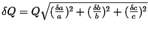

Next: About this document ...
Physics 234-236 Laboratory
Error Propagation
 is a sum or difference of independent measurements
, , , ...
with errors , , , ... .
is a sum or difference of independent measurements
, , , ...
with errors , , , ... .
- Ex.) If . Then
.
- Ex.) If
,
,
, then
, which rounds to .
- is a product or ratio of independent measurements
, , , ... ,
with errors , , , ... .
- Ex)
. Then

- Ex.) If
, then
 which rounds to
which rounds to  .
.
- , where is known exactly (i.e., a constant like ).
- , where is a power and is the measurement.
- is any function of one variable .
Jason Pinkney
2004-09-08